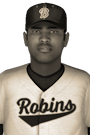

|
|
|  | Moncassin Terrific, Takes CJBT Most Valuable Player Award Saturday, April 6th, 1929 The manager of the Team Michigan said he thinks Ben Moncassin is only going to get better as he gets older. He may only be 21, but it will be hard to top the third baseman's 1929 campaign, as he has been named the winner of the Canadian Junior Baseball Championship Most Valuable Player Award. His winning campaign featured a .495 batting average and a .530 on-base percentage this year. In 20 games he piled up 45 hits, 11 doubles, no triples, 3 home runs, 23 RBIs and 25 runs scored. He received 9 first place votes out of a possible 18. Max Humprey of the Team New England finished second in voting with 5 first place votes, while Jayden Mays of the Team New York finished third with 4 first place votes. Player - Team - First Place - Total Points Ben Moncassin - Team Michigan - 9 - 166 Max Humprey - Team New England - 5 - 129 Jayden Mays - Team New York - 4 - 127 Jeremy Doyle - Team Iowa - 0 - 91 Nathan Daniels - Team Ontario - 0 - 60 Trent Busakorn - Team Columbia - 0 - 55 Phassakorn Chakrapan - Team Pennsylvania - 0 - 55 Stan Oser - Team Michigan - 0 - 50 Kittibun Chaiyasin - Team New York - 0 - 48 Carter Holmgren - Team Erie - 0 - 36 J.R. Payne - Team Pennsylvania - 0 - 35 Atchawut Tonkanyaa - Team Pennsylvania - 0 - 29 Raymond Wilhelm - Team Oregon - 0 - 28 Wade Atkinson - Team Oregon - 0 - 26 Tanapol Kung - Team Columbia - 0 - 26 Fabian LoConte - Team Manitoba - 0 - 26 Pierre Lessard - Team New York - 0 - 20 Dirk Edwards - Team Erie - 0 - 12 Hank Borthwick - Team Manitoba - 0 - 7 Jacob St-Jean - Team Pallister - 0 - 7 Vichit Wells - Team Oregon - 0 - 7 Jame Narcisse - Team Quebec - 0 - 5 Pairat Charoenpura - Team Minnesota - 0 - 4 Ansley LaVallee - Team Dakota - 0 - 4 Eric Chabot - Team Quebec - 0 - 3 Nicolas Lustig - Team Erie - 0 - 3 Albert Dunlop - Team Michigan - 0 - 2 Brayden Hershfield - Team Iowa - 0 - 1 |   |